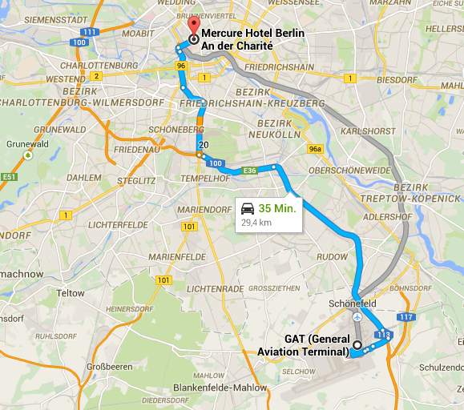

Operational experiences from actual trips
The flight itself is usually the smallest part of the trip. Getting to and from the airport, getting the plane ready and later either secure it or stow it away are the biggest time eaters.
In general, before the engine can be started and the actual flight begins, a number of things have to be done:
- pay fees
- get to the aircraft from the terminal
- remove protections (cowl plugs, pitot tube, windows, etc.) from the aircraft
- walk around the aircraft and verify things per checklist
- get latest weather information and update flight plan
If the aircraft has been stowed in a hangar instead of sitting outside, someone has probably to move other aircraft first. At some airports one is not allowed to move any aircraft for insurance reasons. The good thing is that one can call ahead and ask them to put the aircraft outside.
In any case the above activities can take a while. It is probably save to assume at least 30 minutes.
Toes in the water
In 2013 I was working on reactivating my pilot license and in early September I had an opportunity to go to a conference in Bukarest, Romania. At that time I was restricted to VFR operations and a broken cloud layer in connection with two thunderstorm cells, that were clearly visible from the distance at 7500ft, prevented me from reaching the destination. I missed the conference but learned a lot about flying outside Germany.
Significant delays are easily possible
There is a lot of opportunity to waste time between arriving at the airport and actual takeoff. When I flew with my family from Ostrava to Szeged this happened:
Ostrava has no GAT (General Aviation Terminal). The airport is usually deserted except for when a Ryanair flight arrives or departs. At the day of our departure we remembered where we left the airport and went back to the same entrance. There we were told to go to the main hall and on the other side of security someone will meet us. The security people obviously believed we are passengers for the next Ryanair flight and didn’t want to let us go through. Plus we had items with us (juice bottle) that are not allowed on airlines but on a private plane they obviously are allowed.
So we endured several minutes of harassment by the security guys until someone arrived to shout out loud “Private flight! Private flight!” and then we were allowed to go through quickly with all our stuff. Just imagine how it would have been to arrive with a lot of additional equipment like portable GPS, radio, maybe survival gear, a big knife, etc. …
We were then asked to board a van and driven across the apron to an office. There I had to pay the fees. Airport invoices can be difficult to create. Somehow there are several items that have to be entered into different systems and eventually the printer produces the invoice. To start the process there is, of course, a form that needs to be filled out. I was unlucky as the Ryanair pilot had to get his briefing material at the same time and it took a while to print out a huge stack of paper for him.
As this was a VFR flight and my usual self-briefing tools did not work that far away from Germany I asked for a weather briefing. In response to that we were driving across the apron to the met office. There a friendly lady tried her best to find the information I needed but despite the room full of computers she didn’t really understand what I was looking for - and it wasn’t a language problem, her English was very good. So she tried to make a few phone calls to airports along my planned route but some did not answer the phone.
All in all it took more than 2 hours for everything.
Flying on a loose schedule
Flying on a schedule can be difficult and challenging. It can also be dangerous depending on the equipment being used and the skill level of the pilot. But when one can be on a loose schedule that changes significantly and thus the use of personal aircraft for business travel becomes absolutely feasible.
In my line of business the exact time of arrival somewhere doesn’t matter much. It is enough to arrive in time for working with the client in the afternoon or for working with the client the next day. I don’t have to at a meeting at an exact time and then leave on time for another meeting somewhere else.
Ground transportation and getting to the aircraft
The biggest time eater and hassle is ground transportation. There can easily be waiting period for a taxi to arrive, for the rental car people to do their paperwork or something else.
Dortmund (EDLW)
Still a VFR only pilot, in 2013 I went on a three day business trip within Germany. My first destination Dortmund also has airline traffic but they also have a GAT (General Aviation Terminal) located away from the terminal for airline passengers. That is important! There are no rules regarding what you can bring onto your own aircraft and thus there is no need to search your baggage or what you carry on your body. Still at the Dortmund GAT they do operate an X-ray scanner and have you walk through the metal detector. But at least the process is very quick and in my case there were no other people who wanted to go through. So it turned out to be a thing of two minutes before I was able to get to the counter to pay the landing and parking fees. As I had been met and dropped off at the airport by the person I wanted to meet with, there was no delay due to local ground transportation whatsoever. In this case I was in the air 15 minutes later.
Berlin
Currently the closest airport to the city center is Berlin-Tegel (EDDT) in the North of Berlin. It is a big airline airport from which most commercial air traffic to/from Berlin is performed. In the South there is Berlin-Schönefeld (EDDB) and then there are two other suitable airports (hard surface runway).
What today is Berlin-Schönefeld (EDDB) is supposed to become the new one and only airport for Berlin and then Berlin-Tegel (EDDT) is scheduled to be closed.

From Tegel, as airline passenger, I have arrived in less than 20 minutes at a destination in the city.
However, although landing at Tegel in between the heavy airliner traffic is certainly possible, one needs to book a slot for arrival and departure and then parking is so limited that one cannot leave the aircraft there for more than a couple of hours. The operation of Tegel is optimized for airlines taking on / dropping off passengers.

The alternative is Berlin-Schönefeld (EDDB) in the south. For IFR arrivals and departures it also requires a slot but there is parking. Besides the slot the other downside is the significant fees. Berlin-Schönefeld (EDDB) is the place to go to when the weather is less than optimal.

A little bit further away is the small airport of Schönhagen. Airport management there does a very good job to attract GA pilots. They offer their own rental cars and for other needs have a cooperation with AVIS.

So far I have flown into Schönhagen multiple times in 2014 for weekly two day visits of clients in the city center. My flights originated from Aschaffenburg (EDFC) and were started VFR with a transition to IFR shortly after takeoff and then finished VFR at Schönhagen. Schönhagen invested into an instrument approach but due to environmentalists filing a lawsuit the approach has not been published and cannot be used.
- 29 Apr 2014 Aschaffenburg - Schönhagen
- 05 May 2014 Aschaffenburg - Schönhagen
- 06 May 2014 Schönhagen - Aschaffenburg
- 12 May 2014 Aschaffenburg - Schönhagen
- 14 May 2014 Schönhagen - Kassel
About 15 minutes after arrival one can be in the rental car and then it takes about 1 hour to the final destination. I’ve tried to use a taxi but it was expensive (85 EUR one way) and I had to wait on the driver to arrive. The available rental cars cost less than the taxi. On one occasion I was stuck in a traffic jam driving back to the airport. You can’t miss your flight when flying GA but you may find that you cannot reach your destination as German airports have closing times and then you are not allowed to land anymore.
So far there was no need to arrive IFR at Berlin-Schönefeld (EDDB) and I don’t know how everything works from there.
| 28 Dec 2014 | Want to leave me a comment? Please write to sns@caimito.net. Thanks! |